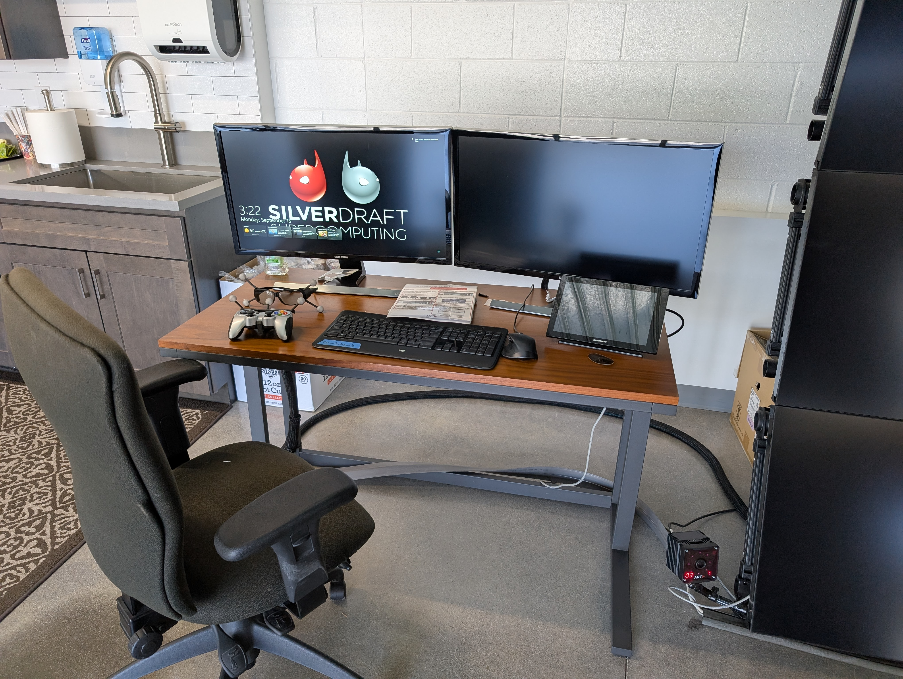
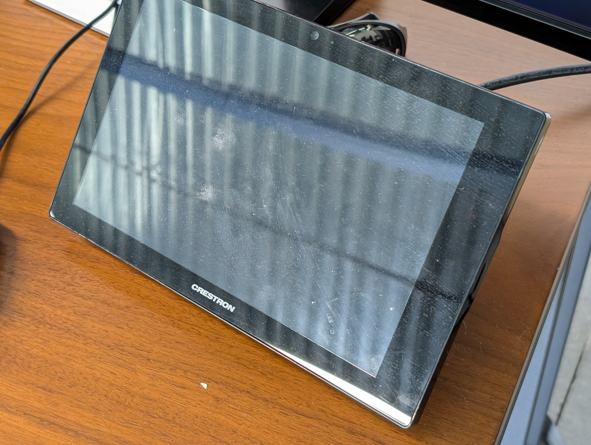
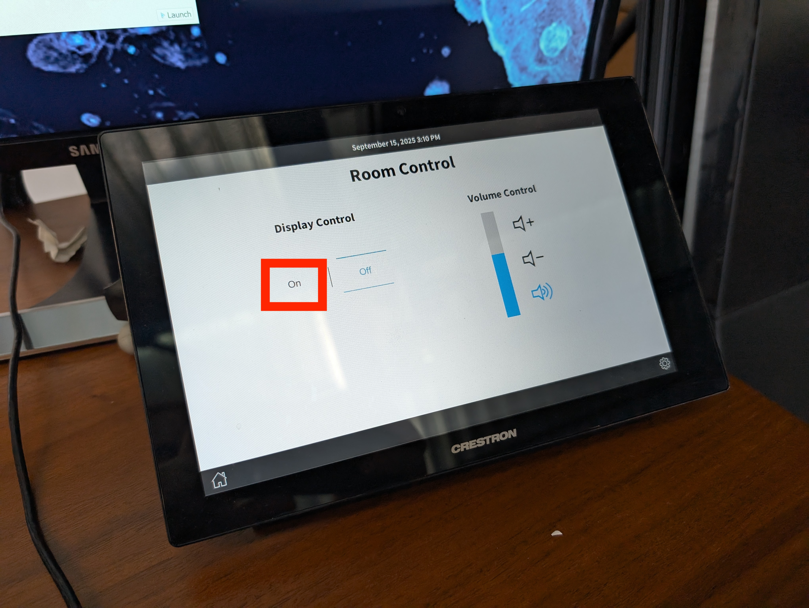

Turning on the system
(1) Turn on the system and log in
Generally the system should already be on; press either the keyboard or the mouse on the control desk and after a few moments the screens on the desktop should wake up.
{kind=link}
If the system doesn’t wake up, look towards the bottom of the server rack for a labelled red power button and press it. The server rack is located in a small room in the far right corner, directly across from the main entrance to the VizLab.

Once it’s on, you’ll need to log into Windows. Look for the password taped to the bottom of the keyboard!
(2) Turn on the VizLab screens
On the control desk you should find a separate CRESTRON touchscreen to control the displays. Touch the screen to wake it, then press ‘On’. You may have to wait a few moments as the screens all flash ‘PLANAR’ as they boot up. Once they’ve finished booting, they should be displaying content from the system!
 {kind=link}
{kind=link}
Now that you’ve turned the system on, proceed to the next sections to learn how to do things with it, whether that’s custom 3D software or standard Windows applications on the big screen!